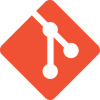
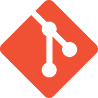
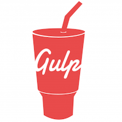
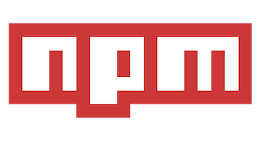
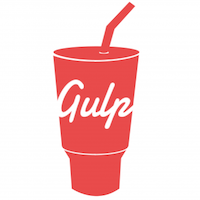
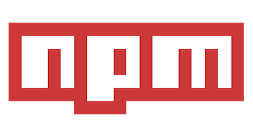

Welcome! I'm Ben.
Junior Software Developer born and raised in Nashville, Tn.
I aspire to create practical applications that enhance everyday life
I spent the first leg of my career as a Strength & Conditioning Coach, where I taught middle school-college age athletes how to use their body to gain a competitive advantadge on the competition. In addition hard work and the physical aspects of the human body, I also taught my athletes how to be mentally tough, respectful, disciplined and patient. Every principle I taught my athletes is what I live by everyday. As a Strength & Conditioning Coach, my aim was to utilize my knowledge of human movement to create customized programs for each of my athletes.
In 2016, I decided to pursue a passion I've had since my freshman year of high school, technology. What is a better way to work with technology than to write the software behind it? I couldn't think of one. So, I enrolled in Nashville Software School, where I was surrounded by a group of like-minded people. Over the last six months, I've been expanding my skillset as a full-stack developer, learning from my mistakes, and exploring new technologies! I dream of being able to develop applications that let people interact with the world around them wether they are on vacation, at work or binge watching their favorite tv show. I believe technology has the power to connect people with whatever they are searching for and I want to be the one to help them find it. Technology is the future! How far it takes us is up to our creativity.
I excel in fast-paced, collaborative environments where I can work with teams who strive to construct creative solutions for practical technologies. When I'm not experimenting with new ways to implement code for applications or personal projects, you can usually find me at the gym, or enjoying outside activites(probably basketball).
-


-
 



 




-
Featured Projects
In Development!